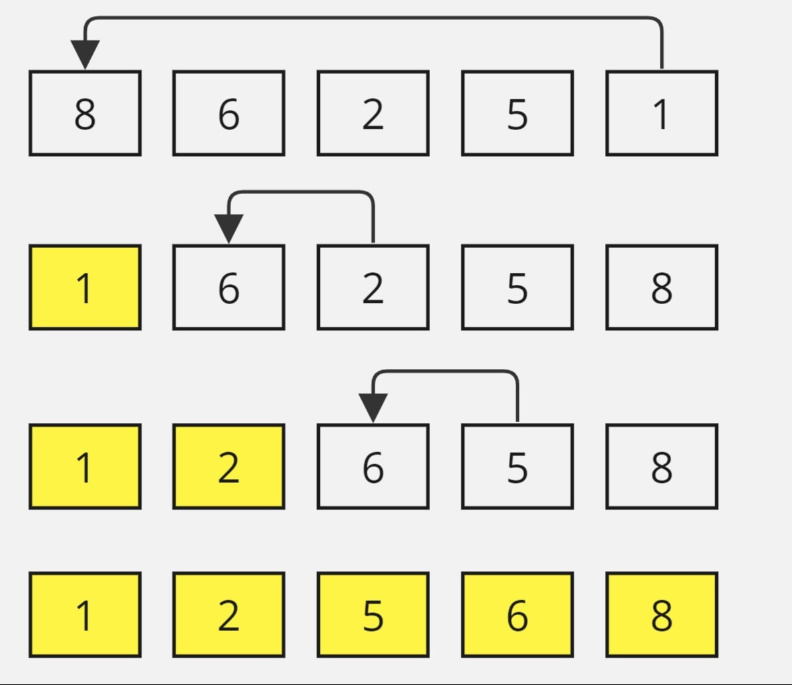
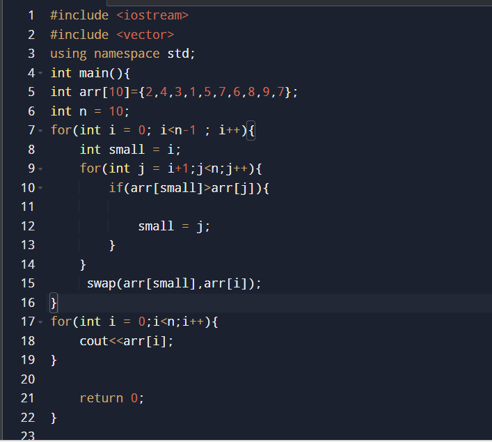
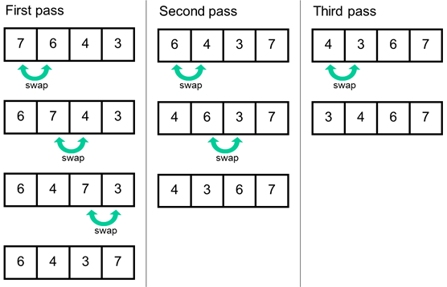
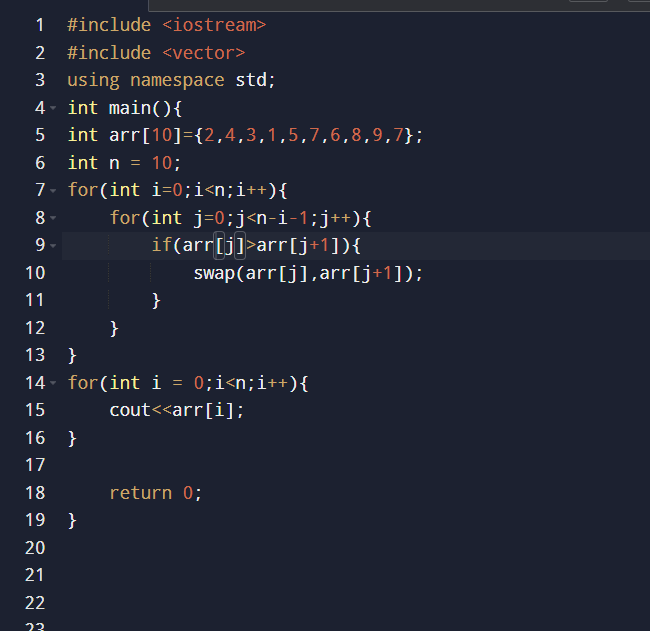
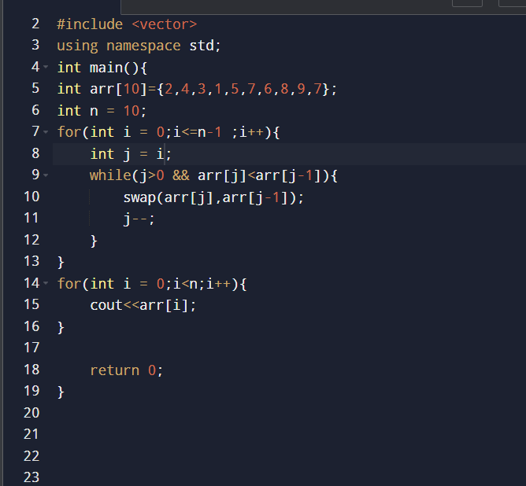
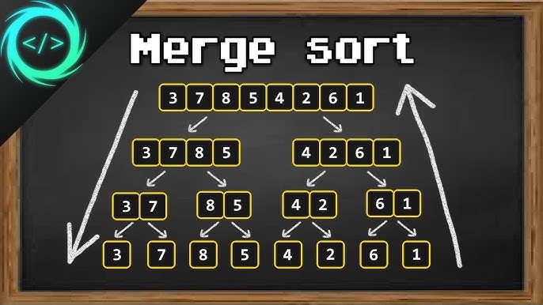
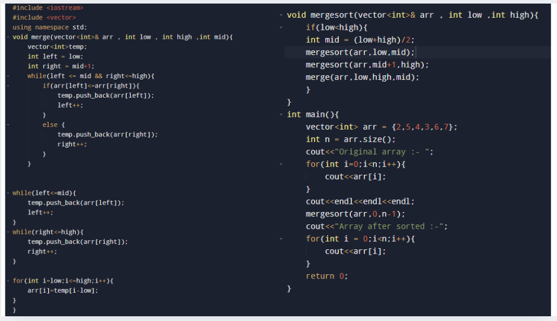
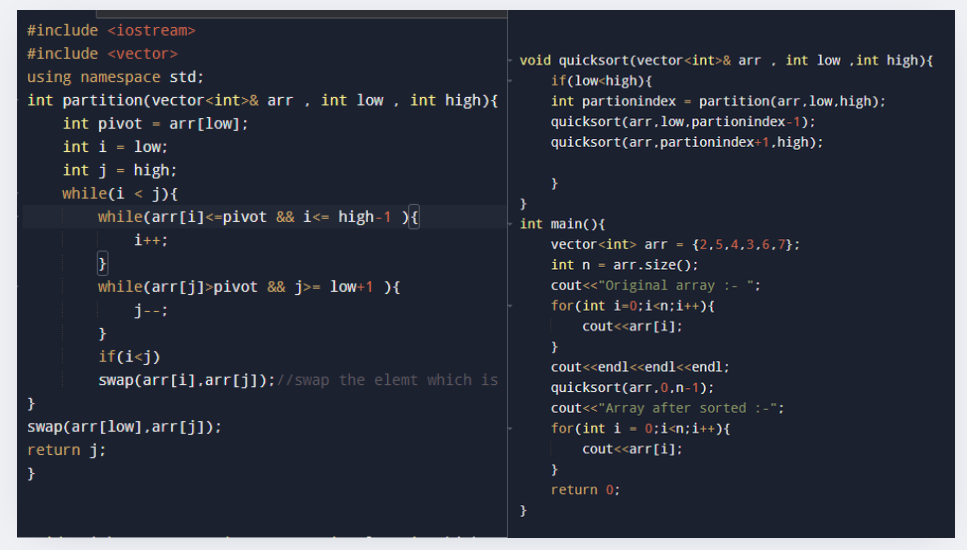
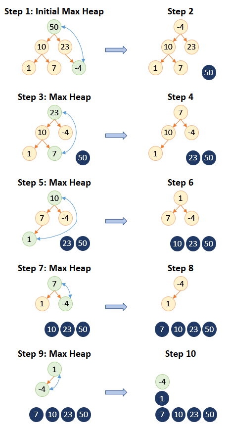

answer: Selection Sort is a comparison-based sorting algorithm.
It sorts an array by repeatedly selecting the smallest (or largest) element from the unsorted portion and swapping it with the first unsorted element. This process continues until the entire array is sorted.

Algorithm Steps:
Start with the first element and assume it’s the minimum.
Compare this element with each subsequent element in the unsorted part of the array.
When a smaller element is found, update the minimum.
Once all comparisons for that pass are complete, swap the minimum element with the first unsorted element.
Repeat this process, moving the boundary between the sorted and unsorted parts of the array until the array is fully sorted.
TIME AND SPACE COMPLEXITY
Time Complexity: Selection Sort has a time complexity of 𝑂(𝑛2)due to the nested loops.
Space Complexity: It’s an in-place algorithm with a space complexity of O(1 )as it requires only a constant amount of extra memory for swapping.
CODE
#include
using namespace std;
int main() {
vector
int n = arr.size();
for (int i = 0; i < n - 1; i++) {
int minIndex = i;
for (int j = i + 1; j < n; j++) {
if (arr[j] < arr[minIndex]) {
minIndex = j;
}
}
swap(arr[i], arr[minIndex]);
}
for(int i =0;i
cout<
return 0;
}

answer: Bubble sort is a comparison-based sorting algorithm. It compares each pair of adjacent elements and swaps them if they are in the wrong order. This process continues until no more swaps are needed.

Algorithm Steps:
Start from the beginning of the array.
Compare each pair of adjacent elements and swap them if they are in the wrong order (i.e., the first is larger than the second).
After each full pass, the largest element will "bubble up" to its correct position at the end of the array.
Repeat the process, reducing the range of comparison by one each time, until no more swaps are needed.
TIME AND SPACE COMPLEXITY
Time Complexity: O(n^2) in the worst and average cases, O(n) if the array is already sorted.
Space Complexity: O(1), as it sorts in-place.
CODE
#include <iostream>
using namespace std;
int main() {
vector
int n = arr.size();
for (int i = 0; i < n-1; i++) {
for (int j = 0; j < n-i-1; j++) {
if (arr[j] > arr[j+1]) {
swap(arr[j], arr[j+1]);
}
}
}
for (int i = 0; i < n; i++) {
cout << arr[i] << " ";
}
return 0;
}

Insertion sort: Insertion sort is a simple sorting algorithm that works by iteratively inserting each element of an unsorted list into its correct position in a sorted portion of the list.

Algorithm Steps:
Begin with the first element as a sorted subarray of one element.
For each subsequent element, compare it backward with the sorted elements, shifting larger elements one position to the right.
Insert the current element into its correct position in the sorted subarray.
Repeat the process for all elements until the entire array is sorted.
TIME AND SPACE COMPLEXITY
Time Complexity: O(n^2) in the worst and average cases, O(n) if the array is already sorted.
Space Complexity: O(1), as it operates in-place.
CODE
#include <iostream>
using namespace std;
int main() {
vector
int n = arr.size();
for (int i = 1; i < n; i++) {
int key = arr[i];
int j = i - 1;
while (j >= 0 && arr[j] > key) {
arr[j + 1] = arr[j];
j--;
}
arr[j + 1] = key;
}
for (int i = 0; i < n; i++) {
cout << arr[i] << " ";
}
return 0;
}

Merge Sort: Merge Sort is a divide-and-conquer algorithm that splits the array into halves, recursively sorts each half, and then merges the sorted halves back together.

Algorithm Steps:
1. Divide the array into two halves.
2. Recursively sort each half.
3. Merge the two sorted halves into a single sorted array.
TIME AND SPACE COMPLEXITY
Time Complexity: O(n log n) in all cases (worst, average, and best).
Space Complexity: O(n), as extra space is required for the temporary arrays during the merge step.
CODE
#include <iostream>
#include <vector>
using namespace std;
void merge(vector
vector
int left = low;
int right = mid + 1;
while (left <= mid && right <= high) {
if (arr[left] <= arr[right]) {
temp.push_back(arr[left]);
left++;
} else {
temp.push_back(arr[right]);
right++;
}
}
while (left <= mid) {
temp.push_back(arr[left]);
left++;
}
while (right <= high) {
temp.push_back(arr[right]);
right++;
}
for (int i = low; i <= high; i++) {
arr[i] = temp[i - low];
}
}
void mergesort(vector
if (low < high) {
int mid = (low + high) / 2;
mergesort(arr, low, mid);
mergesort(arr, mid + 1, high);
merge(arr, low, high, mid);
}
}
int main() {
vector
int n = arr.size();
cout << "Original array: ";
for (int i = 0; i < n; i++) {
cout << arr[i] << " ";
}
cout << endl << endl;
mergesort(arr, 0, n - 1);
cout << "Array after sorted: ";
for (int i = 0; i < n; i++) {
cout << arr[i] << " ";
}
return 0;
}

Quick Sort: Quick Sort is a divide-and-conquer algorithm that selects a 'pivot' element and partitions the array around the pivot, ensuring that elements on the left of the pivot are smaller and those on the right are larger.

Algorithm Steps:
1. Choose a pivot element.
2. Partition the array such that elements less than the pivot are on the left, and elements greater than the pivot are on the right.
3. Recursively sort the sub-arrays to the left and right of the pivot.
TIME AND SPACE COMPLEXITY
Time Complexity: Average - O(n log n), Worst - O(n^2).
Space Complexity: O(log n) due to recursion.
CODE
#include <iostream>
#include <vector>
using namespace std;
int partition(vector
int pivot = arr[low];
int i = low;
int j = high;
while (i < j) {
while (arr[i] <= pivot && i <= high - 1) {
i++;
}
while (arr[j] > pivot && j >= low + 1) {
j--;
}
if (i < j) {
swap(arr[i], arr[j]); // Swap elements greater or smaller than the pivot
}
}
swap(arr[low], arr[j]);
return j;
}
void quicksort(vector
if (low < high) {
int partitionIndex = partition(arr, low, high);
quicksort(arr, low, partitionIndex - 1);
quicksort(arr, partitionIndex + 1, high);
}
}
int main() {
vector
int n = arr.size();
cout << "Original array: ";
for (int i = 0; i < n; i++) {
cout << arr[i] << " ";
}
cout << endl << endl;
quicksort(arr, 0, n - 1);
cout << "Array after sorted: ";
for (int i = 0; i < n; i++) {
cout << arr[i] << " ";
}
return 0;
}

Max Heap Sort: Max Heap Sort is a comparison-based sorting algorithm that uses a binary heap data structure. A max-heap is a complete binary tree where the value of the parent is greater than or equal to the values of its children. The heap property ensures that the largest element is always at the root.

Algorithm Steps:
1. Build a max heap from the input data.
2. The root of the max heap will be the largest element. Swap the root with the last element of the heap.
3. Remove the last element (which is now the largest) from the heap and heapify the root.
4. Repeat steps 2 and 3 for the remaining heap until all elements are sorted.
TIME AND SPACE COMPLEXITY
Time Complexity: O(n log n) for both the building of the heap and sorting.
Space Complexity: O(1), as the algorithm sorts the elements in place.
CODE
#include <iostream>
#include <vector>
using namespace std;
void heapify(vector
int largest = i;
int left = 2 * i + 1;
int right = 2 * i + 2;
if (left < n && arr[left] > arr[largest])
largest = left;
if (right < n && arr[right] > arr[largest])
largest = right;
if (largest != i) {
swap(arr[i], arr[largest]);
heapify(arr, n, largest);
}
}
void heapSort(vector
int n = arr.size();
for (int i = n / 2 - 1; i >= 0; i--) {
heapify(arr, n, i);
}
for (int i = n - 1; i >= 1; i--) {
swap(arr[0], arr[i]);
heapify(arr, i, 0);
}
}
int main() {
vector
heapSort(arr);
cout << "Sorted array: ";
for (int i = 0; i < arr.size(); i++) {
cout << arr[i] << " ";
}
return 0;
}
KEEP GOING!! JUST ONE LAST STEP..